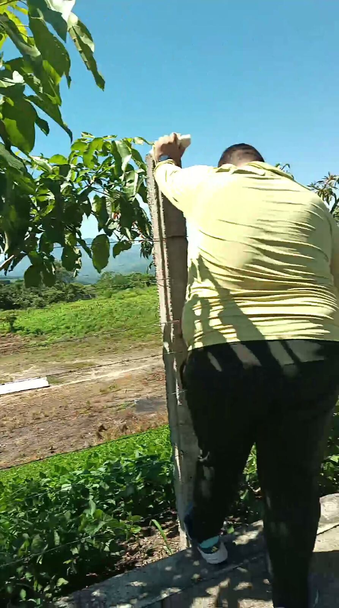
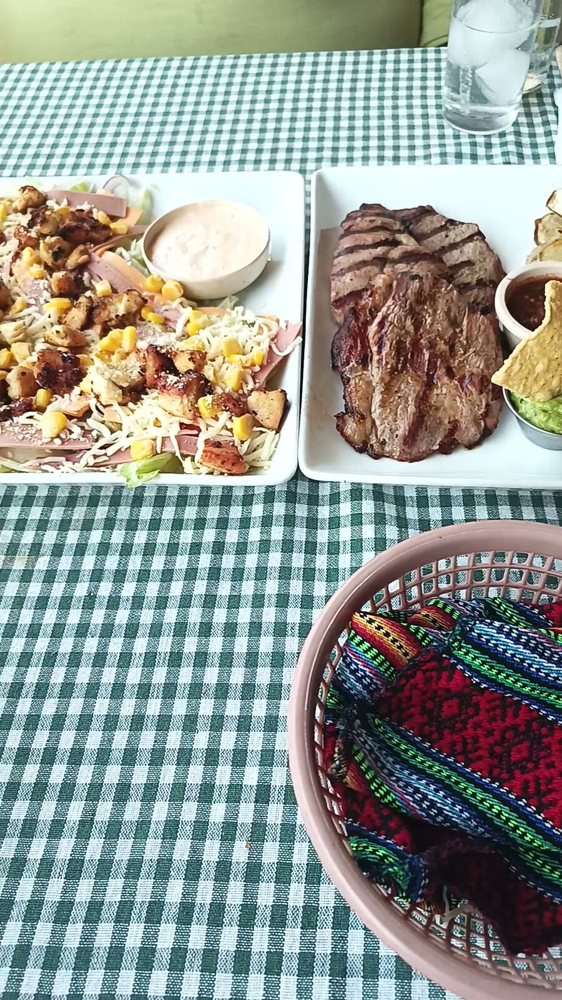
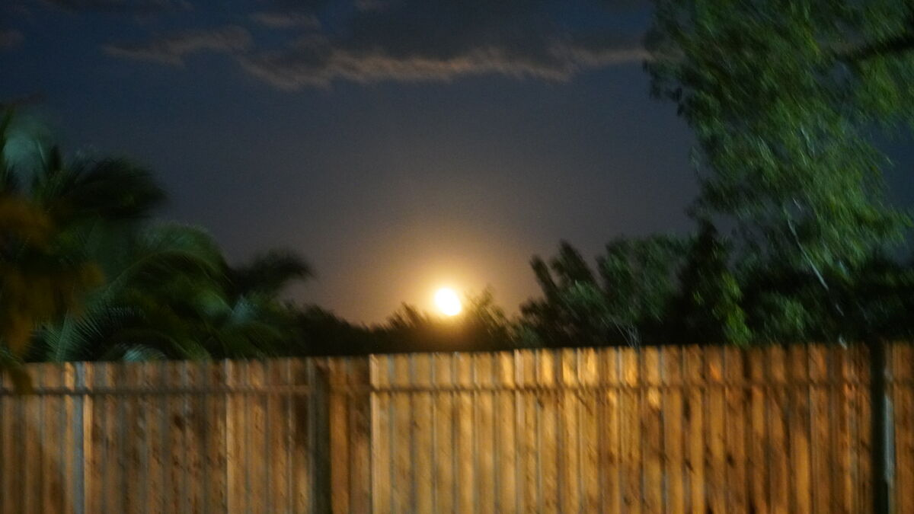
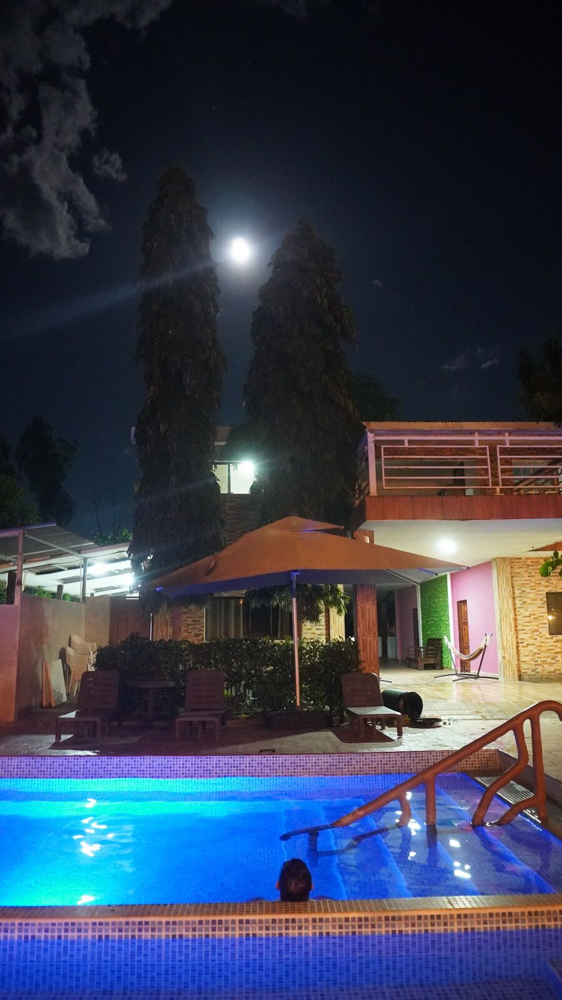
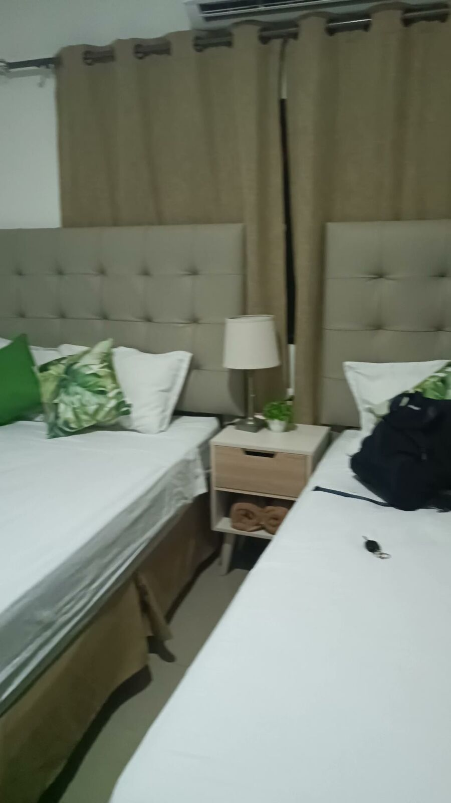
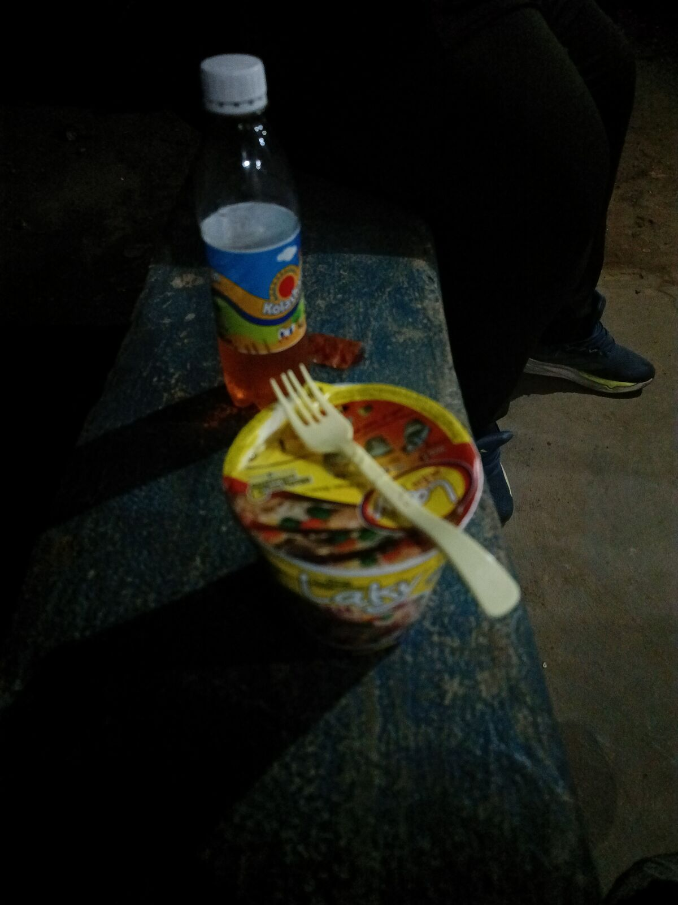
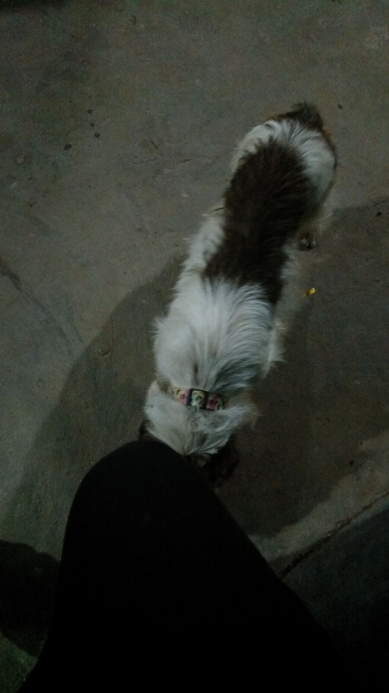
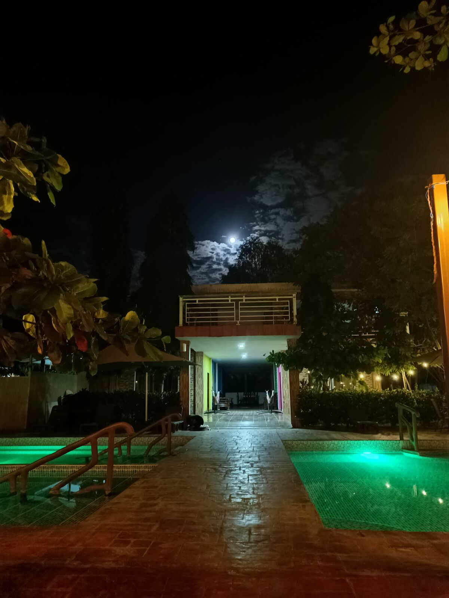

揣着五美元去萨尔瓦多
早上 8 点我们从 El Cerinal 出发，先去了巴韦雷纳（Barberena）的 Dollar City，想找个东西替换那个摔断的支架，就是把手机固定在自行车上的那个。可惜运气不好：Dollar City 根本不卖这种东西。正在这时，爷爷打电话给我：“你落了一个带电池的东西……你是不是把无人机也忘了？”于是只好掉头回去，不过还好，巴韦雷纳和 El Cerinal 离得很近。
之后我们决定开车跳过一小段。巴韦雷纳的绕城公路和这条路的其他路段一样，非常危险：右侧车道有些地方路况很差，而且车开得太快。所以我们开过了奎拉帕（Cuilapa），从那里开始骑。今天的目标是 Los Esclavos 桥（奴隶桥），传说这座桥是魔鬼亲手完工的，建成 400 多年后依然屹立不倒。
这一段稍微轻松一些，因为下坡很陡，José 几乎不用踩。可是有下坡就有上坡。上坡快到头时，José 下了车，推着车走完了那两公里。我停下来等他，但大卡车和拖车一辆接一辆，实在太危险，于是我先往前开，在一处路边停车带等他。几分钟后他到了，又累又烦：车子的重量，加上沿着路缘骑的别扭，后来又推着车走，让他受了点伤。但这并没有拦住他。桥前面有个小环岛，我们在那里停了一会儿，等他缓过来，然后继续前进，终于到了 Los Esclavos。今天的目标完成了：从奎拉帕骑了大约 10 公里。

从这里开始我们改坐车。接下来只要赶到哈尔帕塔瓜（Jalpatagua）吃午饭、工作就行了。很有意思的是，一路上的小镇不断变化，人们的行为也随着当地有什么而不同。我一直在想：到底是先有生意，还是先有那些住在这里、脑子里装着与众不同想法的人？

吃完午饭，我们出发前往阿瓦查潘（Ahuachapán），去一家叫 Termaland 的酒店。过了边境，能看到两个国家之间的反差，也能看到很多相似之处，真的很有意思。到了那边，先是一段漂亮的公路，然后，哈哈，不知不觉天就黑了，我们还错过了两个去 Termaland 的路口。结果发现，Termaland 在一条乡间土路的中间。错过第二个路口后，我们在下一个加油站停下，发现我的导航指向一边，José 的却指向另一边。我们决定赌一把，希望只是入口吓人一点。结果并不是：整整 5 公里左右全是土路，路上还遇到好几辆小轿车在求助，因为去那里的路确实难走。附近没有房子，没有路灯，什么都没有。

我们只能慢慢开，一路骂骂咧咧，哈哈哈，最后终于到了一个世外桃源：四周全是青蛙的叫声，还能看到如今几乎快要消失的萤火虫。工作人员接待了我们，带我们看了房间（顺便说一句，非常漂亮），然后最重要的一句是：餐厅不营业，哈哈哈哈。我们之前还说“到了再吃”。根本没想到会来到这样的地方，更没想到会没饭吃。


那个小伙子说：“当然，下面有时候有卖 pupusa（萨尔瓦多玉米饼）的”，哈哈。价格还挺便宜：六个 pupusa revuelta 才 3 美元。最好笑的是，我们根本没换美元，因为觉得用不上，哈哈，碰巧 José 身上带了 5 美元，这就是我们的晚饭钱了。然后小伙子又说：“出门左手边第一户人家有个小卖部，至少能在那儿买点东西。”所以 pupusa 是吃不成了，我们就去了小卖部。
在萨尔瓦多的荒郊野外，我们来到一座简朴的小房子，里面有个几乎什么都没有的小卖部。只有泡面和零食，就是那种一小袋一小袋的薯片和糖果。我们只有 5 美元，我有点不好意思，因为不知道东西多少钱，所以只买了两碗泡面，最后花了 90 美分，又买了两瓶 Kolashampan 汽水入乡随俗，外加两包 Tostecas 零食。我这人比较自来熟，就问那位太太能不能送我们点热水泡面。她一开始没听懂，后来终于听懂了，哈哈，还免费帮我们把面泡好了。最后，这顿晚饭一共花了 2.90 美元。我们揣着五美元来到萨尔瓦多，现在只剩两美元了，哈哈哈哈。

我们聊了起来，那位太太说这里以前很危险，但几年前就不再这样了，天气好的时候会有人来玩。我心想：早上在危地马拉，我们没能去 Laguna del Pino（松树湖），因为爷爷建议我们别去那么早，最好周末再去：工作日因为帮派问题会很危险，更何况我们还带着无人机。可现在我们在这么一个漆黑偏僻的地方，人家却说这里超级安全，哈哈哈。
那位太太告诉我们，她很喜欢去危地马拉，以前那边更便宜，她特别喜欢。但我最想说的是：她和家人居然跟我们聊了快一个小时。当然，她家里有个大约 16 岁的男孩出来陪着她，一直待在我们附近，算是保护她。很神奇，到最后人还是会信任陌生人：我们信任他们，他们也信任我们。整个过程都挺自在的，但这种情况对任何人来说都可能变得危险。

一天结束时，我们泡进了酒店的温泉池，好好放松，为明天做准备：前往圣安娜（Santa Ana），走路也好，骑车也好，跑步也好。我们会去瀑布看看，再决定接下来做什么。谢谢你读到这里，希望你继续关注、陪我们走完这段旅程。请帮忙分享。爱你们。

👆 点击地图上的任意一个点，即可阅读当天的章节。